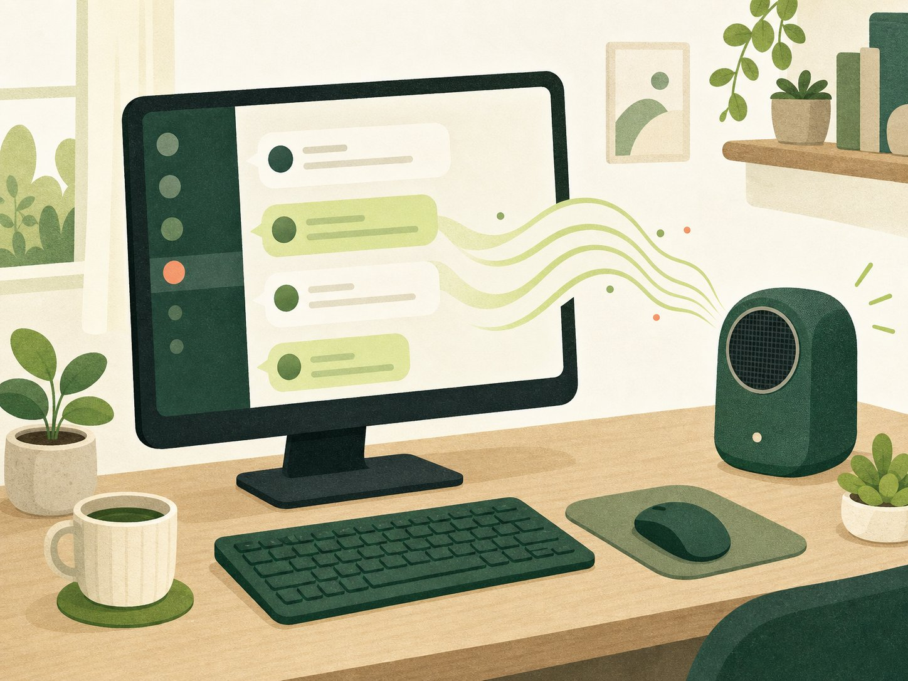

自然な日本語の声
起動中のAivisSpeechやVOICEVOXを自動で見つけ、声を名前から選べます。
Windows・Macに対応
ゲーム中も、作業中も。 届いたメッセージを自然な日本語の声で読み上げます。
月額料金なし・広告なし。あなたのパソコンで動きます。

読み上げくんでできること
起動中のAivisSpeechやVOICEVOXを自動で見つけ、声を名前から選べます。
声を作る処理はパソコンの中で行います。開発者にメッセージは送られません。
アプリは無料で使えます。利用人数に応じた料金や広告もありません。
いつものパソコンに入れて使えます。初回の準備が終われば、ボタン一つで始められます。
はじめる前に
文章を声にするアプリと、 Discordの通話へ参加する「読み上げ役」です。 どちらも、このページを見ながら準備できます。
文章を声に変えるために、AivisSpeechかVOICEVOXのどちらか一つを使います。
迷ったらこちら
感情のある自然な声を使いたい方に向いています。
公式ページから入れる声を選んで楽しむ
いろいろなキャラクターの声から選びたい方に向いています。
公式ページから入れる選んだ声のアプリを入れて、起動します。
最初の画面が表示されるまで待ちます。読み上げ中は、このアプリも起動したままにします。
読み上げくんの 設定 を開き、自動で見つける を押します。
声を名前から選び、この声を試す で確認して保存します。
Discordの通話で音を流すための、小さな専用アカウントです。別の人のアカウントや、有料サービスは必要ありません。
読み上げ役がDiscordのメッセージを受け取り、あなたと同じ通話へ入って声を流します。作るのは最初の一度だけです。
読み上げくんの 設定 から Discordの開発者ページを開く を押します。
New Application を押し、名前を「読み上げくん」にして Create を押します。
左側の Bot を開き、Message Content Intent をオンにして Save Changes を押します。
同じページで Reset Token を押し、表示された文字列を Copy でコピーします。
ボットのトークン 欄へ貼り付けて 確認して保存 を押します。
サーバーに追加 を押し、読み上げたいDiscordサーバーを選んで許可します。
ここまでできたら準備完了
準備が終わったら
AivisSpeechまたはVOICEVOXを開きます。
読み上げくんで 読み上げを始める を押します。
Discordのメッセージ欄で /join と入力します。
安心して使えます
よくある質問
いいえ。使いたい声に合わせて、どちらか一つだけ入れてください。読み上げ中は、選んだ声のアプリも起動しておきます。
声のアプリが完全に起動してから、設定の 自動で見つける をもう一度押してください。声のアプリを先に起動してから、読み上げくんを開き直すと直ることもあります。
いいえ。あなたが管理する専用の小さなアカウントです。ほかの人のログイン情報は使いません。Discordの準備は最初の一度だけです。
送りません。読み上げくんへ貼り付けるだけです。パスワードと同じものなので、スクリーンショットや問い合わせにも載せないでください。
/join が見つかりません読み上げ役を一度サーバーから外し、読み上げくんの サーバーに追加 からもう一度追加してください。数分待ってDiscordを開き直すと表示されることもあります。
はい。動かすパソコンを一台決めれば使えます。読み上げ中はそのパソコンを起動しておき、合言葉はほかの人へ渡さないでください。
はい。読み上げくんに月額料金や広告はありません。声のアプリも公式ページから無料でダウンロードできます。
読み上げくんはWindows 11とmacOS 13以降に対応します。VOICEVOXをMacで使う場合は、VOICEVOX側の条件によりmacOS 14以降が必要です。
Windows 11とmacOS 13以降に対応しています。
無料でダウンロード